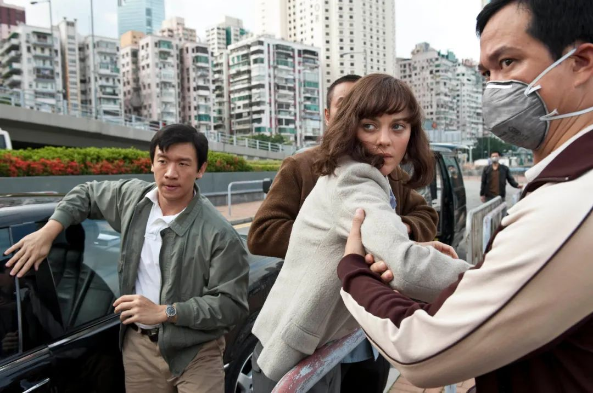

独家 |《人类简史》作者赫拉利再发声：疫情中我们将创造怎样的世界？
原文链接 备份链接 编者按：继在《三联生活周刊》2020年第12期独家中文刊发《阻止全球灾难，需要重获失去的信任》一文后，以色列历史学家尤瓦尔_·_赫拉利（代表作《人类简史》三部曲） 再次在本刊独家中文刊发最新署名文章，表达他对这场疫情危 …
编者按：“我在斯洛文尼亚卢布尔雅那的家中隔绝，沮丧中挣扎着做一点工作”，和《三联生活周刊》的通信中，斯拉沃热·齐泽克（Slavoj Žižek）说他也深受全球疫情之扰，身心俱疲。
齐泽克出生于1949年，是今日欧洲乃至世界最引人瞩目的公共知识分子之一。从1989年出版第一本英文著作《意识形态的崇高客体》名满天下，这位以“拉康主义继承人”自居的东欧哲学家，积极介入各类社会现实议题，对现代性和资本主义危机不断提出反思，其影响力历经二十余年而不衰。因为粉丝遍布不同国家、界别，有人称他是罕见的“知识界的摇滚明星”。
新冠肺炎疫情引发世界关注之后，齐泽克2月初曾撰文提出反思性问题：“事实终止于何处，意识形态从何处开始?”，提醒人们警惕因疫情而来的种族主义：“但应该真正羞愧的是世界各处只想着如何隔离中国人的我们所有人”。
如今疫情已成全球大流行，欧洲自身成为重灾区，我们邀请齐泽克分享他置身疫情之中的最新思考。齐泽克于3月18日以英文写作完成本文，授权《三联生活周刊》独家发表本文中文版，我们请齐泽克著作的中文译者、北京师范大学季广茂教授进行了翻译。原文标题为Is Barbarism With A Human Face Our Fate?（温情脉脉的野蛮行径乃是我们的宿命？）
这篇文章中，齐泽克结合当下全球范围内对疫情的应对，提醒我们目前的危机是三重的：“医疗危机（流行病本身），经济危机，外加（切勿低估的）心理健康危机。”齐泽克认为，最大的危险在于以疫情为名，实施看似合理实则野蛮的行径，例如“放弃对老者和弱者的照料”或是简单接受“适者生存”这一逻辑。文末，齐泽克发出疑问：这次疫情会被简化成漫长“灾难资本主义”的一个章节，或者一种新型的世界秩序会由此脱颖而出？
（感谢汪晖教授的帮助）
文｜斯拉沃热·齐泽克
译｜季广茂

这些天来，我有时真盼着自己染上这种病毒——如此以来，至少那个令人惴惴不安的不确定性会消失……有清楚的迹象表明，我越来越忧心忡忡。这个迹象就是我与睡眠的关系。直到大约一个星期前，我一直热切地等待夜幕降临：最终，我能逃入梦乡，忘记日常生活中的恐惧……现在的情形几乎是完全相反：我害怕入睡，因为一入梦乡，即为噩梦所困，并在一团慌乱中惊醒。
现状如何？最近我们常听人说（其实我自己也在这么说），我们需要彻底的社会变革，因为我们真的要应对如今正在蔓延的疫情所导致的后果。**但是，彻底的变革已经发生。
**
冠状病毒的流行，使我们面对本以为不可能发生的事情。我们无法设想，这类事情真的会发生在我们的日常生活之中：我们熟知的世界已经停止运行，整个国家都被封锁起来，很多人只能侧身于自己的公寓（想想那些连这最起码的安全防范措施都无力承担的人们吧），面对着不确定的未来（即使多数人幸免于难，巨大的经济危机还是无可避免）。这意味着，面对它，我们应该这样回应：去做貌似无法做到的事情，也就是说，去做在现行世界秩序坐标中似乎不可能做到的事情。不可能发生的事情已经发生，我们的世界已经停止运行，我们也必须去做貌似不可能做到的事情，以避免最坏结局的形成。这貌似不可能做到的事情，是什么？

插图｜范薇
我并不认为，我们面对的最大威胁是重返不加遮掩的野蛮状态，重返为了活命而不择手段的残酷的暴力状态（在那种状态下，到处是公众的骚乱，慌乱的私刑，等等）。尽管随着医疗保健和某些公共服务的崩溃，这也是很有可能的。
我害怕不加遮掩的野蛮行径，但我更害怕温情脉脉的野蛮行径。这种野蛮行径虽然表现为为了活命而不择手段的无情措施，但这些措施却是带着遗憾甚至是同情来执行的，同时还被专家们的意见合法化了。只要仔细观察，就不难发现，在向我们发话时，一些领导者的语调发生了怎样的变化。他们不仅想表现得沉着自信，而且常常做出令人惊恐的预测：疫情可能要持续大约两年之久，病毒最终将感染60%至70%的全球人口，数百万人将一命呜呼，等等。简而言之，他们真正想要传达的信息是，我们不得不打破我们的社会伦理的基本前提，放弃对老者和弱者的照料。我们应该注意，对于“适者生存”这一逻辑的接受，甚至违反了军事伦理的基本原则。军事伦理的基本原则告诉我们，一场大战过后，首先要照顾重伤员，即使拯救他们的机会渺茫。（不过，仔细观察之后，我们不应对下列情形感到震惊：一些医院已经在对癌症患者做同样的事情，任其自生自灭。）大家不要误会，我可是一个彻头彻尾的现实主义者，我认为，应该制订生产某种药物的计划，以便使绝症患者无痛死亡，使其免受不必要的痛苦。**但是，我们不应该首先着眼于医疗资源的节省，而应该不惜一切代价，无条件地帮助那些需要帮助的人们，保全其性命。
**

好莱坞电影《传染病》（2011）剧照
因此，虽然对乔治·阿甘本充满敬意，但我不同意他的见解。他在当前的危机中看到了一个迹象，那便是：“除了赤裸裸的生命，我们的社会什么都不再相信。显而易见，意大利人倾向于牺牲几乎一切，包括正常的生活状态、社会关系、工作，甚至友谊、交情、宗教信仰和政治信念，以消除生病的危险。赤裸裸的生命，以及丧失赤裸裸的生命的危险，并不能使人们团结如一，反而使人们视而不见，把人们分割开来。”事情远较此朦胧：它也会把人们团结起来，保持身体上的距离，是对对方的尊重，因为我也可能携带病毒。我的儿子们现在对我避而远之，因为他们担心会感染我（对他们来说，只是微不足道的小病，对我而言，却足以致命）。如果说，在冷战时期，得以生存的法则是MAD（Mutually Assured Destruction，确保相互摧毁），那么，现在则是别样的MAD（Mutually Assured Distance，确保彼此距离）。
在过去的几天里，我们反复听人提及，每个人都要各负其责，必须遵守新的法则。媒体上充斥着某人行为不端，把自己和他人置于危险境地的新闻（某人走进一家商店，开始咳嗽，等等）。这里的问题与生态问题如出一辙。媒体在谈及生态问题时，一再强调我们个人理应承担的责任（回收利用所有的旧报纸，等等）。这样关注个人责任，虽然是必要的，但是，一旦以此使我们忽视那个重大问题——如何改变我们整个经济制度和社会制度这一重大问题，如此作派就会发挥意识形态的功能。只有把抗击冠状病毒的斗争与抗击意识形态神秘化（ideological mystifications）的斗争结合起来，并把抗击冠状病毒的斗争视为全面生态战争的一部分，才能开展抗击冠状病毒的斗争。正如凯特·琼斯所言，疾病从野生动物向人类的传播是“人类经济发展的隐性成本。无论在哪种环境中，我们都在数量上占优。我们正在进入基本上未曾遭受人类侵袭之地，而且我们的侵袭日甚一日。我们正在创造一些栖息地，在那里，疾病更易于传播。然后我们大吃一惊：天呐，我们发现了新病毒。”
因此，仅仅把某种全球性的医疗保康资源聚集起来并提供给人类，是不够的，还要把自然考虑进去。病毒还攻击植物，而植物是我们食物的主要来源（如土豆、小麦和橄榄）。我们必须永远着眼于我们置身其间的全球性的世界景观，牢记这一景观暗含的所有悖论。例如，我们很高兴地了解到，中国因为冠状病毒而封城，使获得拯救的生命多于被病毒杀死的生命。

3月11日，世界卫生组织宣布将新冠疫情定义为“全球大流行病”。
我们将身陷三重危机：医疗危机（流行病本身），经济危机（无论流行病最终导致怎样的结果，经济都将遭受重创），外加（切勿低估的）心理健康危机。亿万人生活世界的基本坐标正在坍塌，由此导致的变化将影响方方面面，从飞行到度假，从度假到日常身体接触，莫不如此。我们必须学着在股票市场和利润的坐标之外思考问题，直接寻找别的方式，来生产和分配必不可少的资源。比如，如果当局获知，某家公司囤积了数以百万计的口罩，且该公司正在等待合适的时机出售赢利，这时，不必与这家公司进行任何协商，直接征用即可。
据媒体报道，特朗普向建在德国图宾根的生物制药公司CureVac提供了10亿美元，以确保它“只为美国”生产疫苗。德国卫生部长延斯·斯潘表示，特朗普政府要接管CureVac，此事“没有商量余地”：CureVac只会“为全世界而非某个国家”开发疫苗。我们在这里看到的是野蛮与文明斗争的一个范例。特朗普不得不援引《国防生产法案》（Defense Production Act），该法案允许政府确保私营产业增加紧急医疗用品的生产：
“特朗普提议接管私营产业。据美联社报道，美国总统表示，他将援引一项联邦条款，允许政府指导私营产业应对疫情。特朗普表示，他将签署一项法案，授权自己指导国内工业的生产，‘以备不时之需’。”
我几周之前在用“共产主义”一词时，遭到了嘲笑。但现在，“特朗普提议接管私营产业”。即使在一周之前，我们能够设想这样的“标题”吗？而且这只是开始而已，以后还会有更多的措施出台。如果国家运营的医疗系统承受太大的压力，社区的局部自我组织将是必不可少的。对于活命而言，一味的隔离是不够的。我们中的某些人要想活命，离不开基本的公共服务，包括电力、食品和药物供应。（有些人已经痊愈，他们至少在一段时间内具有免疫力，我们很快就需要这些人的名单，以便把他们动员起来，为公众提供紧急服务。）

常言道，一旦身陷危机，我们都是社会主义者。就连特朗普也在考虑采取“全民基本收入”（UBI）这一措施，为每个成年公民提供1000美元的支票。数万亿美元的支付将违背所有的市场规则。但现在，这些钱将如何支付，在哪里支付，支付给谁？这种强行实施的社会主义会是专为富人服务的社会主义吗？（别忘了，在2008年，几百万普通人失去了微薄的积蓄，但得到救助的却是银行。）这次疫情会被简化成内奥米·克莱因所谓“灾难资本主义”的漫长的悲惨故事的一个章节吗？或者，一种新型的（或许更加温和的，同时也是更平稳的）世界秩序会由此脱颖而出？
大家都在看


⊙本文版权归斯拉沃热·齐泽克所有，欢迎转发到朋友圈。
点击图片，一键下单
「*全球经济 熔断时刻*」

***************▼ 点击阅读原文，******************************进入周刊书店******************************，购买更多好书。***************
原文链接 备份链接 编者按：继在《三联生活周刊》2020年第12期独家中文刊发《阻止全球灾难，需要重获失去的信任》一文后，以色列历史学家尤瓦尔_·_赫拉利（代表作《人类简史》三部曲） 再次在本刊独家中文刊发最新署名文章，表达他对这场疫情危 …
原文链接 备份链接 事态还在发展，一日多变，州、县、市都发了紧急状态令，3月18日，本地所有餐馆被要求关闭堂吃，一大批员工失业，生计成为问题，政府救济在途。黎明之前将会有一段至暗时刻。我们也只有就地卧倒，保护自己，共渡难关了。 文 | …
原文链接 备份链接 近日 网上流传的这样一段视频 引发网友热议 网传信息显示，据了解，该女子为澳大利亚籍华人，返京后不按规定居家隔离外出跑步且不戴口罩。面对社区防疫人员劝说，该女子不但不听劝告，还大喊“救命骚扰”。随后民警赶到对其发出了 …
原文链接 备份链接 流行病防范创新联盟CEO理查德·哈切特估算，要足够快地开发出新冠肺炎疫苗，需要在未来12到18个月内花费20亿美元 文 |《财经》记者 王晓枫 编辑 | 郝洲 北京时间3月16日晚，由军事科学院军事医学研究院陈薇院士 …
原文链接 备份链接 当人类生存的主题被病毒、大流行病裹挟时，在白宫坐镇的特朗普、民间看好的疾病专家安东尼·福西和美联储主席鲍威尔纷纷出招，是老旧的套路还是定海神针，还未可知 文 |《财经》特派记者 金焱 发自华盛顿 编辑 | 苏琦 3 …